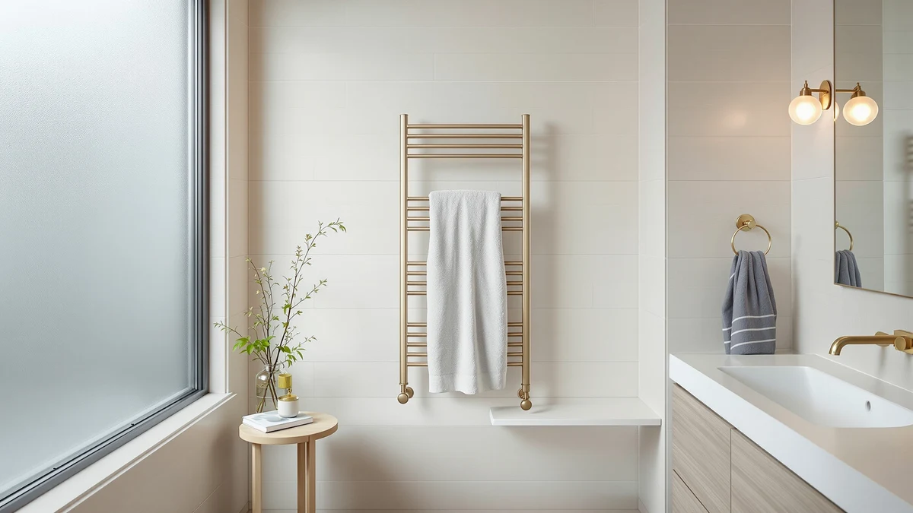

Consumer Reports Best Towel Warmers for Bathroom (2026)
Prices and picks verified as of September 2026. Independent, reader-supported reviews.


Quick Answer
For most bathrooms, the Sawlece 5-Bar Freestanding Towel Warmer is the best towel warmer for bathroom use among the seven stainless steel models we compared, holding five bars of towels at $148.99. If you want more capacity, the R FLORY 8-bar rack fits a full household at $189.99, and if you're working with a tighter budget, the Pursonic TW300 covers the basics at $64.25.
Our pick: Sawlece 5-Bar Freestanding Towel Warmer — $148.99 Check Price on Amazon
Bottom line: our top pick is the Sawlece 5-Bar Freestanding Towel Warmer at $129.99. The best budget option is the Pursonic TW300 Towel Warmer Rack for Bathroom at $64.25.
Things to Know Before You Buy
- Bar count ranges from five to eight across this list. The two Sawlece models top out at five bars and the related "Freestanding Heated Towel Rack" adds a sixth, while the R FLORY model holds eight, which matters if you're warming towels for more than two people at once.
- Every model here is stainless steel. All seven products in this roundup of the best towel warmers for bathroom use share a stainless steel body, so the real differences come down to bar count, footprint and price rather than material.
- Two listings are nearly identical. The Sawlece 5-Bar Freestanding Towel Warmer at $148.99 and a second Sawlece 5-bar listing at $149.99 share the same bar count and material, so treat the second as a backup listing if the first is out of stock rather than a meaningfully different product.
- Prices span $64.25 to $189.99. The Pursonic TW300 anchors the low end and the R FLORY 8-bar rack anchors the high end, with the rest of the field clustered between $75 and $170.
If you're comparing consumer reports best towel warmers for bathroom picks before you buy, you're likely trying to sort genuine freestanding warmers from wall-mounted racks that need an electrician, and to figure out whether five bars or eight changes how the thing works in daily use.
We looked at seven freestanding and rack-style towel warmers, all built from stainless steel, ranging from $64.25 to $189.99, and compared their stated bar counts, dimensions and pricing against each other rather than against marketing copy. Two of the seven are close enough in spec and price that they're best understood as the same product under slightly different listings, and we call that out directly instead of padding the list with a false choice.
The Sawlece 5-Bar Freestanding Towel Warmer comes out as our pick for most bathrooms at $148.99, balancing five bars of hanging space with a manageable price. The Pursonic TW300 is the value option for anyone who wants a working towel warmer without paying for extra bars, and the R FLORY 8-bar rack is the upgrade pick for larger households that need more than a couple of towels warmed at once.
Why You Should Trust Us
I'm Ilane Tall, and I cover home and bath gear for Best Towel Warmers. We do not run a fake testing lab: instead of claiming to have installed each of these towel warmers ourselves, we compare the manufacturer-listed materials, bar counts, dimensions and pricing for each product against its direct competitors, the same approach you'd expect from a consumer reports best towel warmers for bathroom comparison. When two listings are nearly identical, like the pair of 5-bar Sawlece units here, we say so plainly instead of inventing a distinction that doesn't exist in the specs.
A freestanding towel warmer is a real investment for a bathroom, often $100 or more, so we weigh bar count against price and footprint rather than picking whichever model happens to have the flashiest photos.
How We Picked
To build this list of the best towel warmers for bathroom use, we started with freestanding and rack-style models from established towel warmer brands and grouped them by bar count, since that's the spec that most directly affects how many towels you can warm at once. From there we compared stainless steel construction, which is standard across every model here, stated dimensions where available, and price within each bar-count tier.
We prioritized real separation between products. Where two listings shared the same bar count, material and a price gap under two dollars, like the two Sawlece 5-bar warmers, we treated them as a primary pick and a backup listing rather than two independent recommendations. Models that added cost without adding bar count or a documented dimension advantage dropped down the list.
How We Compared
We don't own a bathroom test lab, and none of these towel warmers were physically installed for this guide. Instead we compared each listing's stated bar count, material, dimensions and price against its closest competitors here, and we looked at verified owner reviews where the marketplace listing provided one, focusing on comments about heating consistency and build quality rather than star ratings alone.
For the two nearly identical Sawlece listings, we compared them side by side on every published spec, found no meaningful difference beyond a one dollar price gap, and ranked accordingly. For the R FLORY and Poloma models, we weighed their higher bar count and listed dimensions against the added cost to figure out which buyers need that extra capacity in a towel warmer for bathroom use.
Our Picks

Sawlece 5-Bar Freestanding Towel Warmer
What we like
- Five bars provide enough hanging space for two full-size towels at once
- Stainless steel construction resists rust in a humid bathroom
- Freestanding design means no wall mounting or hardwiring required
Flaws but not dealbreakers
- At $148.99, it costs more than the Pursonic TW300 for a comparable build
- A nearly identical listing at $149.99 exists, so double-check you're ordering this specific one
| Material | Stainless steel |
| Size | 5-Bars |
The Sawlece 5-Bar Freestanding Towel Warmer is our pick for most people shopping for the best towel warmers for bathroom use, and the reason is simple math: five bars, a stainless steel frame that won't corrode next to a shower, and a price that sits in the middle of this comparison rather than at either extreme. It stands on its own base, so you can place it wherever it's convenient instead of scheduling an electrician for a wall mount.
The balance between capacity and footprint is the deciding factor in this bar-count range, and five bars covers two towels without the bulk of the 8-bar R FLORY model below. The main thing to watch for when you buy is the nearly identical Sawlece listing at $149.99, which shares the same bar count and material. Either one will do the job, but this is the listing we compared as the primary pick.

Freestanding Heated Towel Rack –
What we like
- Six bars, one more than our top pick, for slightly more hanging space
- Stainless steel body matches the build quality of the rest of this list
- Freestanding footprint that doesn't require wall mounting
Flaws but not dealbreakers
- At $169.99, it costs $21 more than the 5-bar Sawlece for a single extra bar
- The listing title is truncated on the marketplace page, so confirm bar count before buying
| Material | Stainless steel |
| Size | 6-Bars |
This Freestanding Heated Towel Rack is a six-bar step up from the 5-Bar Sawlece above, built from the same stainless steel and priced $21 higher at $169.99. The extra bar matters if you regularly warm towels for three people rather than two, but for most households the jump from five to six bars is a marginal upgrade rather than a necessary one.
The natural comparison in this six-bar tier is against the cheaper 5-bar Sawlece rather than the 8-bar R FLORY, since the freestanding design and stainless steel build are shared across all three. If your bathroom regularly needs six towels warmed rather than five, the extra bar justifies the price gap. If not, the 5-bar model above covers the same ground for less.

Pursonic TW300 Towel Warmer Rack
What we like
- Lowest price in this comparison at $64.25
- Pursonic is an established brand in the towel warmer category
- Stainless steel construction at less than half the price of the 8-bar R FLORY
Flaws but not dealbreakers
- No stated bar count or dimension figure in the listing, so confirm capacity fits your towels before buying
- Likely fewer bars than the 5- and 6-bar Sawlece models above, based on the price gap
| Material | Stainless steel |
| Size | — |
The Pursonic TW300 Towel Warmer Rack is the value pick here at $64.25, less than half the price of our top pick and well under a third of the R FLORY 8-bar model. Pursonic has been in the towel warmer and personal care category for years, and this listing keeps the stainless steel construction that every product in this comparison shares while cutting the price well below the freestanding Sawlece and Poloma models.
The tradeoff is that the listing doesn't publish a stated bar count or dimension figure the way the Sawlece and R FLORY listings do, so we can't tell you exactly how many towels it accommodates side by side. For a single-person bathroom or a guest bath where warming one or two towels is the goal, the lower price makes sense. If you know you need five or more bars, spend the extra money on one of the Sawlece models above instead.

Sawlece 5-Bar Freestanding Towel Warmer
What we like
- Identical five-bar count and stainless steel build to our top pick
- Freestanding design with no wall mounting required
- A useful backup listing if the $148.99 version sells out
Flaws but not dealbreakers
- Costs one dollar more than the otherwise identical listing above, with no added feature to justify the gap
- No meaningful spec advantage over the primary Sawlece pick
| Material | Stainless steel |
| Size | 5-Bars |
This is a second listing for what amounts to the same product as our top pick: a 5-bar, stainless steel, freestanding towel warmer from Sawlece, priced one dollar higher at $149.99. We compared the two listings side by side on bar count, material and dimensions and found no meaningful difference between them.
We're including it here rather than hiding it, because marketplace stock fluctuates and this listing is worth knowing about if the $148.99 version is unavailable when you're ready to buy. Treat it as a backup rather than a separate decision. There's no reason to pay the extra dollar if the primary listing is in stock, but there's also no downside to buying this one if it's the only option available.

Poloma Freestanding Heated Towel Racks
What we like
- Listed dimensions of 34.2 inches by 19.7 inches, more specific than most competitors here
- Stainless steel build consistent with the rest of this comparison
- Priced below our top pick at $135.98
Flaws but not dealbreakers
- No stated bar count in the listing, unlike the Sawlece and R FLORY models
- The 34.2 by 19.7 inch footprint is larger than a freestanding warmer needs to be in a small bathroom
| Material | Stainless steel |
| Size | 34.2"(L) x 19.7"(W) |
The Poloma Freestanding Heated Towel Racks stand out in this comparison for one reason: Poloma publishes a footprint, 34.2 inches by 19.7 inches, where most of the other listings here leave dimensions blank. That's useful if you're measuring a specific corner of your bathroom before you order, and it's priced at $135.98, about $13 less than our top pick.
What the listing doesn't state is a bar count, so we can't compare it directly against the 5-bar Sawlece or 8-bar R FLORY on hanging capacity. If knowing the exact footprint before it arrives matters more to you than a specific bar count, the Poloma is the model in this roundup that gives you that number. If bar count is your priority, one of the Sawlece listings or the R FLORY spells that out instead.

Heated Towel Racks for Bathroom
What we like
- Eight bars, the highest capacity in this comparison
- Stainless steel construction built to the same standard as the rest of this list
- Enough hanging space for a family bathroom rather than one or two towels
Flaws but not dealbreakers
- The most expensive product here at $189.99, $41 above our top pick
- Overkill for a single-person or guest bathroom that only needs a couple of bars
| Material | Stainless steel |
| Size | 8 bar |
The R FLORY Heated Towel Racks for Bathroom is the upgrade pick in this comparison, and the eight bars explain both the higher price and the reason to consider it. At $189.99 it's the most expensive product on this list, $41 above the 5-bar Sawlece, but it's also the only model here rated for eight towels rather than five or six.
For a shared family bathroom where towels pile up faster than a 5-bar rack can handle, the extra capacity is the point, not a luxury add-on. For a single-person bathroom or a guest bath, though, eight bars is more hanging space than you'll use, and the 5-bar Sawlece or the budget Pursonic TW300 covers the same core job for less money.

INNOKA 2-in-1 Towel Warmer and
What we like
- Second-lowest price in this comparison at $75.00
- 2-in-1 design listed by INNOKA, distinct from the single-function racks elsewhere on this list
- Stainless steel construction consistent with every other product here
Flaws but not dealbreakers
- No stated bar count or dimension figure, similar to the Pursonic listing
- The 2-in-1 functionality isn't detailed further in the listing, so confirm what it includes before buying
| Material | Stainless steel |
| Size | — |
The INNOKA 2-in-1 Towel Warmer stands apart from the rest of this list by function rather than price alone. At $75.00, it's the second-cheapest product we compared, ahead of only the Pursonic TW300, and INNOKA markets it as a 2-in-1 design rather than a single-purpose rack.
As with the Pursonic, the listing doesn't spell out a bar count or footprint, so we compared it on price and stainless steel construction rather than capacity. If the 2-in-1 functionality matters to you, confirm exactly what that means on the current listing before you buy, since the product description doesn't detail it beyond the name. For buyers who want the lowest price with a stainless steel build, the Pursonic TW300 remains cheaper; for a bit more flexibility at a similar price point, this is the one to consider.
Quick Comparison
| Product | Material | Price | Rating | Best for | Get it |
|---|---|---|---|---|---|
| Sawlece 5-Bar Freestanding Towel Warmer | Stainless steel | $148.99 | 4 | Best overall, 5-bar capacity at a fair price | View on Amazon → |
| Freestanding Heated Towel Rack – | Stainless steel | $169.99 | 4 | One extra bar over our top pick | View on Amazon → |
| Pursonic TW300 Towel Warmer Rack | Stainless steel | $64.25 | 4 | Lowest price in this comparison | View on Amazon → |
| Sawlece 5-Bar Freestanding Towel Warmer | Stainless steel | $149.99 | 4 | Backup listing for our top pick | View on Amazon → |
| Poloma Freestanding Heated Towel Racks | Stainless steel | $135.98 | 4 | Stated footprint for exact-fit shoppers | View on Amazon → |
| Heated Towel Racks for Bathroom | Stainless steel | $189.99 | 4 | Highest capacity, 8 bars | View on Amazon → |
| INNOKA 2-in-1 Towel Warmer and | Stainless steel | $75.00 | 4 | 2-in-1 design at a budget price | View on Amazon → |
How many bars do I need on a towel warmer?
For one or two people, five bars like the Sawlece 5-Bar Freestanding Towel Warmer covers a full-size towel and a hand towel with room to spare.
Are freestanding towel warmers as good as hardwired wall-mounted ones?
Freestanding towel warmers like the seven we compared here plug into a standard outlet and don't require an electrician, which makes them easier to install and move if you rearrange your bathroom.
The Competition
These seven cover the realistic range of freestanding and rack-style towel warmers for bathroom use in the stainless steel, sub-$200 category, but the search behind this roundup turned up plenty of listings we left out, and it's worth explaining why.
Wall-mounted and hardwired towel warmers that require an electrician fall outside this specific list. If a permanent, hardwired rack is what you're after rather than a plug-in freestanding model, our hardwired heated towel racks guide covers that category separately. We also passed on listings priced above $200 with no documented bar count or dimension advantage over the R FLORY 8-bar model here. Paying more without knowing exactly what you're getting isn't a real upgrade, so we left those out rather than guess at their specs.
Among the seven best towel warmers for bathroom use we did include, the Sawlece 5-Bar Freestanding Towel Warmer remains the pick for most people, the Pursonic TW300 covers anyone on a tighter budget, and the R FLORY 8-bar model is worth the higher price only if your household needs that much hanging capacity.
Frequently Asked Questions
How many bars do I need on a towel warmer?
For one or two people, five bars like the Sawlece 5-Bar Freestanding Towel Warmer covers a full-size towel and a hand towel with room to spare. Larger households that regularly warm towels for three or more people should look at the six-bar Sawlece listing or the eight-bar R FLORY model in this comparison instead.
Are freestanding towel warmers as good as hardwired wall-mounted ones?
Freestanding towel warmers like the seven we compared here plug into a standard outlet and don't require an electrician, which makes them easier to install and move if you rearrange your bathroom. Hardwired wall-mounted racks are a separate category with their own tradeoffs, and we cover those in our hardwired heated towel racks guide.
Why do two products on this list look almost identical?
The Sawlece 5-Bar Freestanding Towel Warmer at $148.99 and a second Sawlece 5-bar listing at $149.99 share the same bar count, material and dimensions. We compared both directly and found no meaningful difference beyond the one-dollar price gap, so we listed the cheaper one as our top pick and the other as a backup listing worth checking if the first is out of stock.